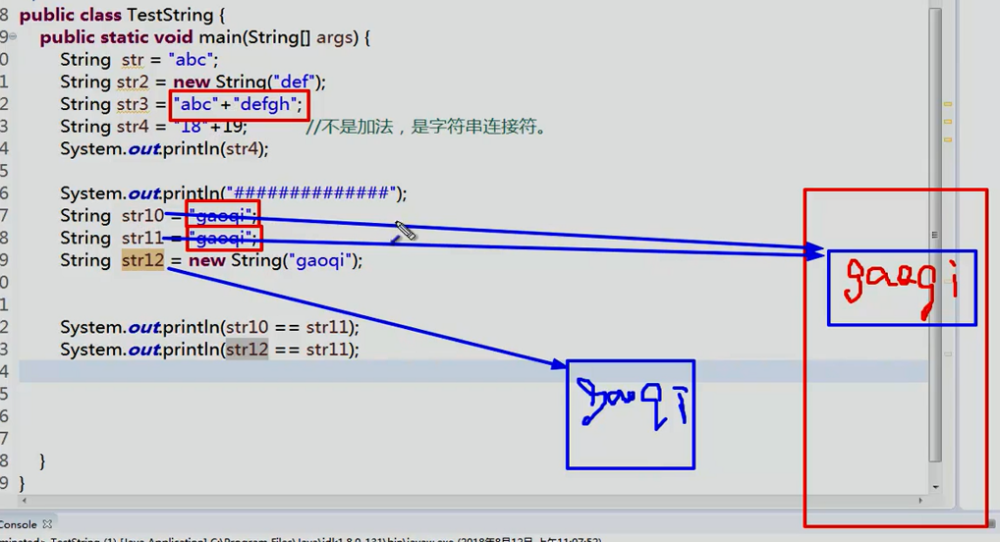

面向对象
抽象方法和抽象类
抽象方法只有声明，没有方法体。
抽象类：为子类提供统一的、规范的模板。子类必须实现相关的抽象方法。
public abstract class Animal{ //包含抽象方法的类是抽象类
abstract public void shout(); //抽象方法
}
抽象方法：
- 没有实现
- 子类必须实现
用法：
- 有抽象方法的类必须是抽象类
- 抽象类不能实例化，不能new
- 抽象类可以包含普通的属性，构造方法，方法。但不能new，只能被子类调用
- 抽象类只能用来继承
- 抽象方法必须被子类实现
接口 interface
抽象类中还可以有普通的属性，方法。而接口中没有任何实现，所有方法都是抽象方法。
[public] interface MyInterface [extends 父接口1，父接口2]{
//可以定义常量、抽象方法
void test01(); //接口中所有方法都是抽象的，实现和规范分离
}
接口：
- 访问修饰符：只能是public或者默认
- 可以多继承
- 接口中的属性只能是常量
public static final，不写也是。 - 接口中的方法只能是
public abstract，不写也是。
接口实现
class Myclass implements MyInterface,MyInterface2{
@Override
public void test01()
{
System.out.println();
}
}
实现类可以实现多个父接口。
内部类
内部类：成员内部类（非静态、静态内部类）、匿名内部类、局部内部类
成员内部类： （可以用private 、default 、 protected 、public进行修饰）
类文件：（外部类$内部类.class）
- 非静态内部类：
- 非静态内部类单独属于外部类的某个对象。
- 非静态内部类可以直接访问外部类的成员，但外部类不能直接访问非静态内部类成员。
- 非静态内部类不能有静态方法、静态属性和静态初始化块。
- 外部类的静态方法、静态代码块不能访问非静态内部类，包括不能使用非静态内部类定义变量、创建实例。
class Outer{
private int age=10;
[static] class Inner{
int age=20;
public void show()
{
int age=30;
System.out.println("外部类age"+Outer.this.age);//10
System.out.println("内部类age"+this.age);//20
System.out.println("局部age"+age);//30
}
}
}
Outer.Inner inner=new Outer().new Inner(); //创建内部类对象
-
静态内部类
- 静态内部类不依托外部类对象。
- 静态内部类可以看做外部类的一个静态成员。内存模型中属于方法区。外部类方法可以通过 静态内部类.名字 的方式访问静态内部类的静态成员。
-
匿名内部类 ： 只是用一次的类
- 匿名内部类没有访问修饰符
- 匿名内部类没有构造方法，没有名字。
new 父类构造器（实参列表） 实现接口（）
{
}
- 局部内部类：方法中的内部类
作用域仅限于该方法。
String
String str="adsf";
String str2= new String ("asdf");
String str3="asdf"+"asdf";
String str4="18"+19; // 1819
常量池
- 全局字符串常量池（String Pool）
- 存放字符串常量的引用值
- 在类加载完成后存到String Pool
- 每个VM中只有一份
- class文件常量池(Class Constant Pool)
- 存放常量（文本字符串，final常量，符号引用）
- 在编译阶段，每个class都有
- 运行时常量池(Runtime Constant Pool)
- 在类加载完成后，将class常量池中的符号引用 转存到运行时常量池中
- 每个class都有。类在解析后，将符号引用替换成直接引用，与全局常量池中的引用值一致。

常用方法
charAt 返回char指定索引处的值
length 返回字符串长度
equals 比较字符串是否相等
equalsIgnoreCase 忽略大小写比较相等
indexOf 字符串1中是否包含字符串2
replace 单个字符替换
startsWith 是否以xxx开头
endsWith 是否以xxx结尾
substring 提取子字符串
toLowerCase 转换大小写
toUpperCase
trim 去掉首尾空格
数组
数组拷贝
容器的拷贝底层都是数组的拷贝。
System.arraycopy(s1,begin,s2,begin,length);
数组置空 ： =null
数组中删除某个元素，本质上还是数组的拷贝（整体向前移动）
数组扩容：先定义一个更大的数组，再将原数组拷贝到新数组中。
Arrays类
Arrays.toString(int []); //toString是一个static方法。直接用类名调用。将数组内容转为String
Arrays.sort(int []);//实现排序要implements Comparable
Arrays.binarySearch(int [] , 12)//二分法查找，返回索引位置
多维数组
第一维长度固定，二维以上长度不固定